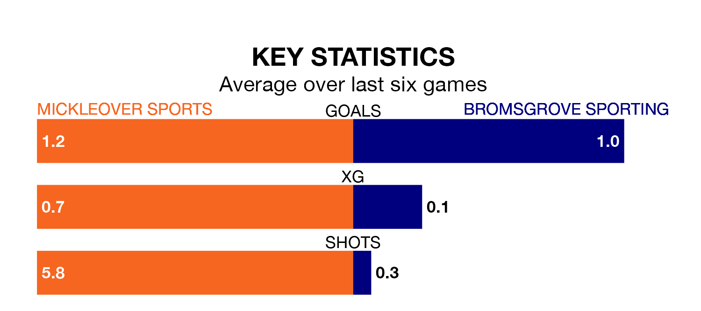

Mickleover Sports are heavy favourites to keep all three points at home in Saturday's kick-off against Bromsgrove Sporting.
Mickleover Sports, who sit top of the Southern League Premier Central with 28 games played, are priced at 1.5 to seal victory at the Don Amott Leisure Group Arena.
Sitting 17 places and 25 points behind them in the table, Bromsgrove Sporting are 5.0 to win with *Betting Company*, while the draw is at 3.8.
With 57 goals in 28 games so far this season, Mickleover Sports are the league's second-highest scorers with 2.0 goals per game. And they are conceding fewer than average, letting in 32 goals at a rate of 1.1 per game.
Bromsgrove Sporting, meanwhile, are below average scorers, with 1.1 goals per game, compared to a league average of 1.5. They have conceded 1.4 goals per game.
The hosts are in reasonable form in the Southern League Premier Central, with four wins and two losses from their last six games.
With a win and a draw over that period, the away team's form is much worse – they have taken four points from 18, compared to Mickleover Sports' 12.
In the last three years, Mickleover Sports and Bromsgrove Sporting have played each other on three occasions. Mickleover Sports won two of them and they drew once.
Their last meeting was on October 17, when they played out a 1-1 draw.
Mickleover Sports' last match was on February 3, a 2-1 win against AFC Sudbury.
Bromsgrove Sporting lost 3-0 against Leamington last time out, also on February 3.
Updated: 11:43 (UTC), 08/02/24